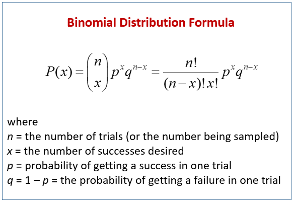
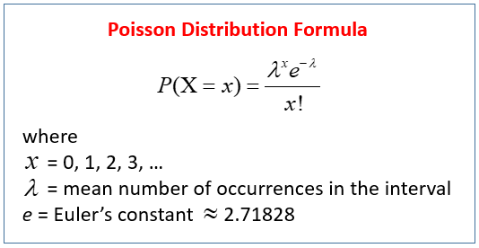
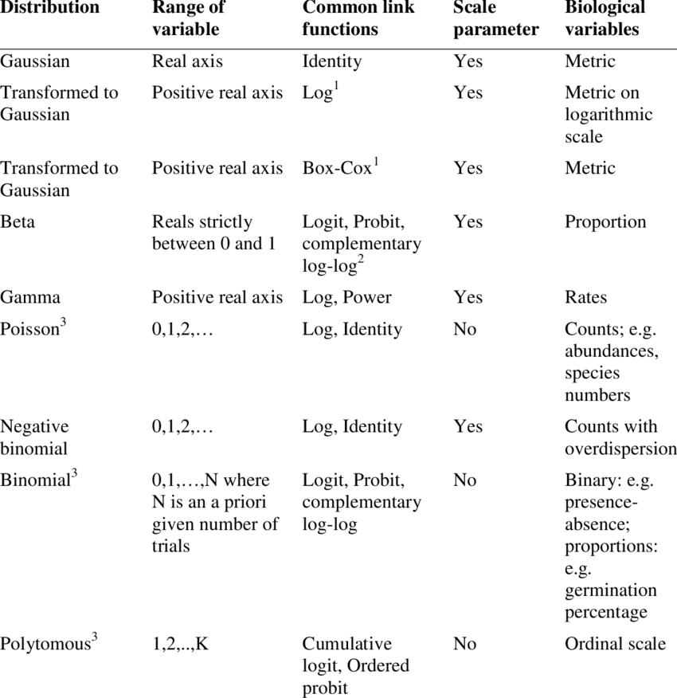

Click here to download the script! Save the script to the ‘scripts’’ folder in your project directory you set up in the previous module.
Load your script in RStudio. To do this, open RStudio and click the files window and select the scripts folder and then this script.
There are no cheat sheets specific to this module but don’t forget the ones you’ve already printed for previous modules!
A Generalized liner model (GLM) is a variation on a linear regression which allows the response variable to have a distribution other than the normal (Gaussian) distribution.
When applying a generalized linear model to your data follow the steps below
Choose the most appropriate distribution for the response variable. e.g., Gaussian, Poisson, negative binomial, gamma, binomial, etc.
Define the systematic component in terms of explanatory variables.
Specify the link between the mean of the response variable and the systematic part.
Check model assumptions.
Common non-normal distributions for wildlife data include…
The binomial distribution represents the probability of an outcome given only two options (e.g. 0s and 1s). Presence/absence data from remote camera traps is a great example of this.

The poisson distribution represents how many times an event is likely to occur over a specified period. Count data follow the poisson distribution.

Here is a helpful table from Thiele and Markussen 2012 you can use to determine which distribution you should use with your data.

The data are independently distributed, i.e., cases are independent. The dependent variable does NOT need to be normally distributed, but it typically assumes a distribution from an exponential family (e.g. binomial, Poisson, multinomial, normal, etc.). A GLM does NOT assume a linear relationship between the response variable and the explanatory variables, but it does assume a linear relationship between the transformed expected response in terms of the link function and the explanatory variables; e.g., for binary logistic regression . Explanatory variables can be nonlinear transformations of some original variables. The homogeneity of variance does NOT need to be satisfied. In fact, it is not even possible in many cases given the model structure. Errors need to be independent but NOT normally distributed. Parameter estimation uses maximum likelihood estimation (MLE) rather than ordinary least squares (OLS).